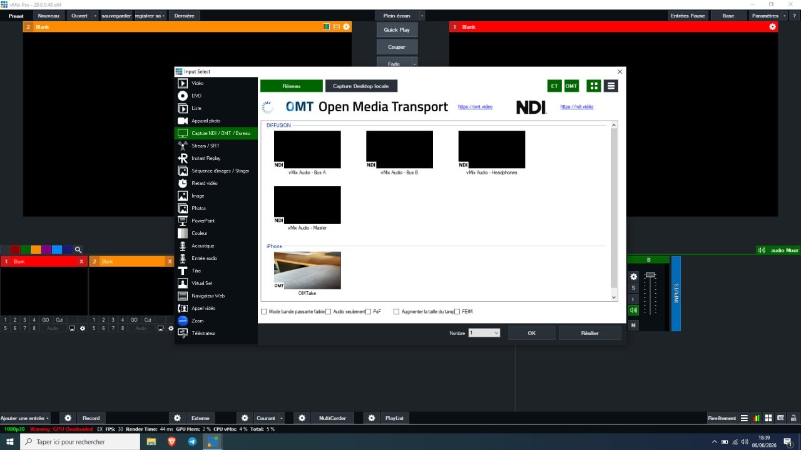
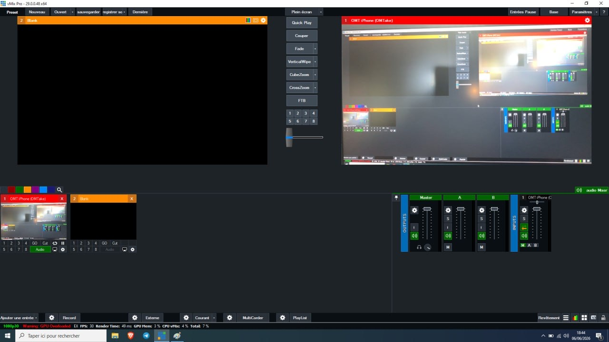

What you need
- An iPhoneiOS 16.6 or later
- vMix 29 or laterOMT input is built in
- One local network5 GHz Wi-Fi for the iPhone, Gigabit cable for the PC if possible
- OMTakeFree on the App Store
Setup in 7 steps
-
Connect both devices to the same network
The iPhone and the vMix computer must be on the same local network and subnet. Avoid guest networks: they usually isolate devices from each other. A 5 GHz network for the iPhone and a wired connection for the computer give the most stable feed.
-
Install OMTake and allow the permissions
Download OMTake from the App Store and open it. iOS asks for three permissions: Camera, Microphone and Local Network. Allow all three. Without Local Network access, vMix cannot discover the iPhone.
-
Name your camera
Tap the source name at the top left of the screen (
OMTakeby default) and give it a name you will recognise in vMix, likeCam 2 Wide. Use a different name on each iPhone. -
Choose resolution, frame rate and quality
Tap the
HD · 30 · MQindicator at the top right:- Resolution: HD (1920×1080) or UHD (3840×2160). Start with HD over Wi-Fi.
- Frame rate: match your vMix project: 25 or 50 fps in Europe (PAL), 30 or 60 fps in North America (NTSC).
- Quality: OMT Low, Medium or High. Medium is a good default; you can change it while live without dropping the feed.
-
Start streaming
Tap the red button. The status bar switches to something like
Live 30fps 12ms 1 rx: the frame rate sent, the latency and the number of receivers connected.0 rxmeans vMix is not connected yet. -
Add the iPhone as an input in vMix
In vMix, click Add Input, then NDI / OMT / Desktop Capture. Your iPhone appears automatically in the list, grouped under the iPhone's name, with an
OMTthumbnail. Use the OMT filter at the top right to hide other sources. Select it and click OK.
vMix 29 Input Select: the iPhone is listed as an OMT source, next to the NDI sources. -
Check tally and go live
When the input is in Preview, OMTake draws a green border around the image. Cut it to Program and the border turns red, while the rear torch glows softly so the person on camera knows they are on air. The iPhone microphone appears on the input's channel in the vMix audio mixer.

The iPhone input live in Program, with its audio channel in the vMix mixer.
Watch the setup
NDI vs OMT
vMix lists NDI and OMT sources in the same window, so both feel the same once added. The differences are in licensing, bandwidth and ecosystem.
| NDI | OMT | |
|---|---|---|
| Made by | NDI (Vizrt) | StudioCoast, the makers of vMix |
| License | Proprietary SDK, free to use under NDI's terms | Open source, MIT license, royalty-free |
| Support in vMix | For many years | Built in since vMix 29 |
| Discovery | Automatic (mDNS / DNS-SD) or Discovery Server | Automatic (DNS-SD / Bonjour) |
| Video codec | SpeedHQ (full bandwidth) or H.264 / HEVC (NDI HX) | VMX, an intra-frame codec with Low / Medium / High quality |
| Low-bandwidth mode | Yes, NDI HX | No, designed for local networks |
| Latency | Low (full bandwidth), higher with HX | Low, intra-frame only |
| Ecosystem | Very large: cameras, converters, most video software | Growing: vMix, media servers and players |
| iPhone app | Several NDI camera apps | OMTake, free with watermark |
Which one should you pick? If your production runs on vMix 29 or later on a local network, OMT gives you a high-quality, low-latency iPhone camera with nothing extra to install or license. If you need to send video over a weak or remote link, or into software that only speaks NDI, NDI HX is the better fit.
Troubleshooting
- The iPhone does not appear in vMix
- Open iOS Settings > Privacy & Security > Local Network and enable OMTake. Check that both devices are on the same network and not on a guest network, that vMix is version 29 or later, and that Windows Firewall allows vMix on private networks (OMT uses TCP ports 6400–6600).
- The status says
Live … 0 rx - The iPhone is streaming but no receiver is connected. Add the input in vMix (step 6), or refresh the NDI / OMT / Desktop Capture list.
- The image stutters or freezes
- Switch the OMT quality to Medium or Low (no need to stop the stream), drop from UHD to HD, move closer to the Wi-Fi access point, or use a 5 GHz network. Connecting the vMix computer by cable helps a lot.
Camera access denied- Enable Camera (and Microphone) for OMTake in iOS Settings > OMTake, then reopen the app.
Stopped: overheating- Under sustained heat, OMTake first lowers the settings automatically to HD / Medium / 30 fps (or 25 fps). If the iPhone reaches a critical temperature, it stops after 10 seconds to protect the device. Remove the case, keep the phone out of direct sun or lights, or use HD for long sessions.
Frequently asked questions
Can I use my iPhone as a camera in vMix for free?
Yes. OMTake is free on the App Store with a small watermark, and OMT support is built into vMix 29 or later, so no extra driver or NDI tools are needed. A one-time €9.99 purchase removes the watermark.
Do I need NDI to use my iPhone in vMix?
No. OMTake uses OMT (Open Media Transport), an open-source protocol built into vMix 29 and later. You add it from the same NDI / OMT / Desktop Capture menu, but nothing NDI-related needs to be installed.
Which vMix version do I need?
vMix 29 or later. OMT input support arrived in vMix 29; earlier versions only list NDI sources.
Why doesn't vMix see my iPhone?
In most cases Local Network access was denied for OMTake. Enable it in iOS Settings > Privacy & Security > Local Network. Also check that both devices are on the same network (not a guest network with client isolation), that vMix is version 29 or later, and that Windows Firewall allows vMix on private networks.
Does it work over Wi-Fi?
Yes, OMTake streams over Wi-Fi. For a stable feed use a 5 GHz (or 6 GHz) network, keep the iPhone close to the access point, and connect the vMix computer with a cable. OMT is a high-quality, low-latency format, so it needs more bandwidth than compressed streaming.
Is audio sent to vMix too?
Yes. The iPhone microphone is sent with the video and appears on the input's channel in the vMix audio mixer. You can mute it from the app.
Does OMTake support tally?
Yes. The image gets a green border when the input is in Preview and a red border when it is in Program. In Program the rear torch also lights up at low intensity.
Can I stream in 4K?
Yes, OMTake can send UHD (3840×2160) at 25, 30, 50 or 60 fps, plus a 24 fps cinema mode. HD (1920×1080) is recommended over Wi-Fi and for long sessions because it uses less bandwidth and keeps the iPhone cooler.
Can I use several iPhones in vMix at the same time?
Yes. Install OMTake on each iPhone and give each one a unique source name. Every iPhone appears as its own OMT source in vMix.
Can I film in portrait?
Yes. OMTake works in portrait and landscape and tells vMix the orientation. In portrait, the image is sent in a 16:9 frame with black bars on the sides.
What is the difference between NDI and OMT?
Both are IP video protocols with automatic discovery on the local network. NDI is a proprietary SDK with a large ecosystem and a compressed HX mode for low bandwidth. OMT is open source under the MIT license, made by the vMix team, royalty-free and built into vMix 29 and later. See the full comparison.